Closed-Loop Control of Oxygen Therapy in Children
This project developed a closed-loop oxygen therapy controller that regulates a simulated patient's blood oxygen saturation (SpO2) by adjusting the fraction of inspired oxygen (FiO2). The plant was modeled as a first-order-plus-dead-time system, with a 20-second biological transport delay and additional measured and unmeasured physiological disturbances.
The final architecture combines a PI controller derived through Q-design, a Smith Predictor to compensate for transport delay, and feedforward compensators for measured heart-rate and respiratory-rate disturbances. The target was 92% SpO2 while respecting the physical oxygen-delivery limits of 21% to 100% FiO2.
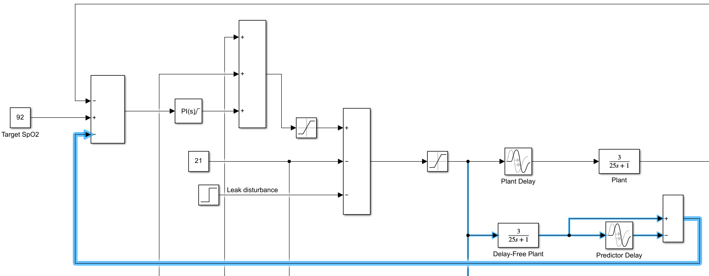
The nominal patient oxygen response was represented by a first-order-plus-dead-time transfer function with gain 3, a 25-second absorption time constant, and a 20-second transport delay. The actuator was saturation-limited to represent the physical range from atmospheric oxygen to pure oxygen.
Heart rate and respiratory rate were treated as measurable first-order disturbances. The simulation also included an unmeasured mask leak at 5000 seconds, sensor noise, and an output disturbance, creating a test case where the controller had to handle both predictable and unpredictable changes.
Q-design PI controller
A baseline PI controller was derived using affine Q-design. The initial design included the plant dead time through a first-order Taylor approximation and produced a conservative controller suitable for the delayed plant. Simulation showed why this alone was insufficient: the controller could not react until the delayed sensor response appeared.
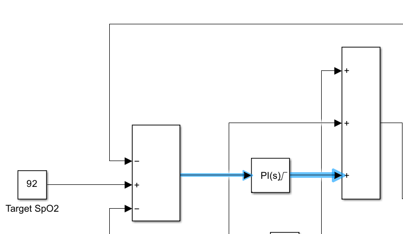
Smith Predictor
The Smith Predictor separates the internal patient model into delay-free and delayed paths. When the physical patient matches the model, the delayed model cancels the measured delayed response inside the feedback calculation, leaving the PI controller to act on the instantaneous model prediction. Removing dead time from the controller's characteristic equation allowed the PI loop to be retuned much more aggressively.
Feedforward disturbance rejection
Heart-rate and respiratory-rate measurements were passed through separate feedforward compensators and summed directly into the FiO2 command before actuator saturation. The compensators were derived from the disturbance models and the inverse of the delay-free patient plant, allowing the controller to counter measured disturbances before they propagated through the biological delay.
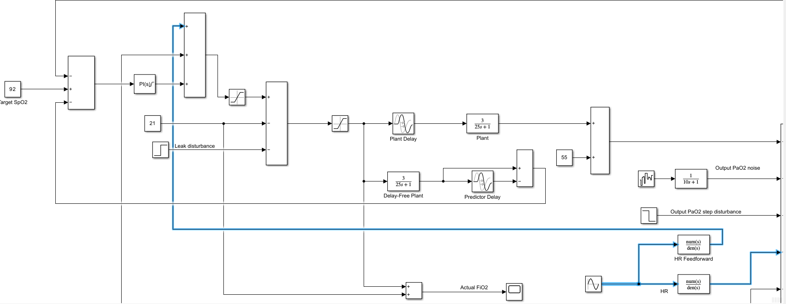
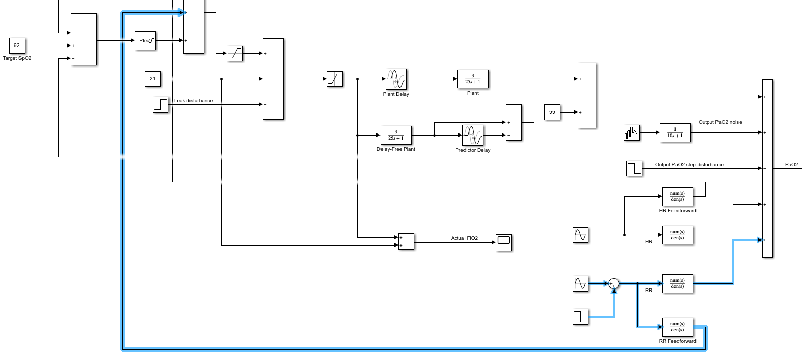
The baseline PI controller exposed the cost of dead time. Startup recovery was slow, with SpO2 falling to 64.96%, and the mask-leak disturbance produced a drop to 82.44% before feedback could respond.
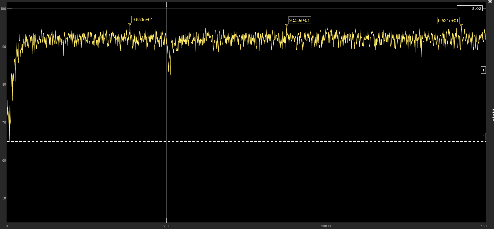
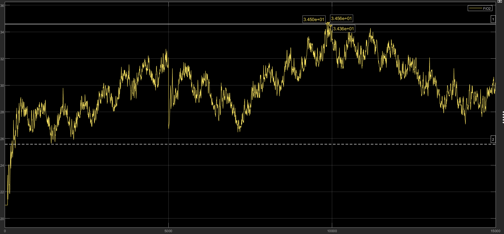
With the Smith Predictor and feedforward paths enabled, nominal performance improved substantially. Across the 15,000-second simulation, median SpO2 was 92.05% and mean SpO2 was 91.89%. The mask leak at 5000 seconds was rejected without a visible departure from the 92% setpoint. Mean oxygen delivery settled at 30.14%, with steady-state FiO2 between 23.02% and 37.39%.
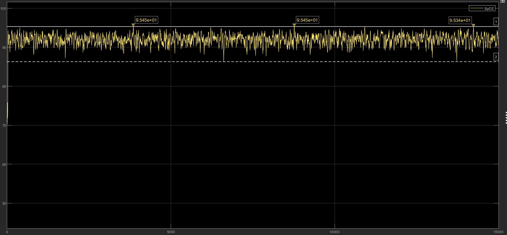
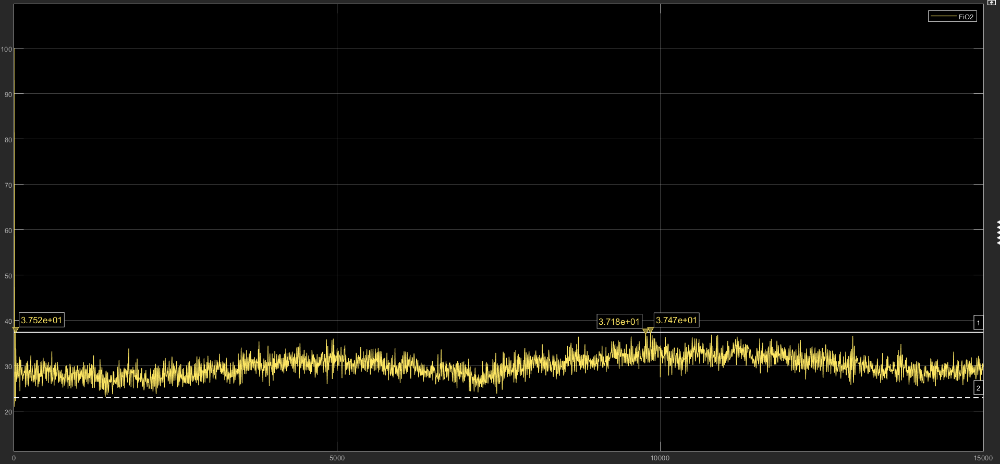
The controller was also tested against extreme patient parameters. Reducing plant gain from 3 to 2 and increasing the absorption time constant from 25 to 35 seconds still produced stable tracking near the 92% target, although lower plant gain required higher average oxygen delivery.
The main limitation was transport-delay mismatch. Increasing the real patient delay from 20 to 30 seconds desynchronized the physical response from the Smith Predictor's internal model, producing high-frequency oscillation and SpO2 peaks up to 98.79%. This test demonstrated the predictor's dependence on an accurate delay estimate and the trade-off introduced by aggressive nominal tuning.
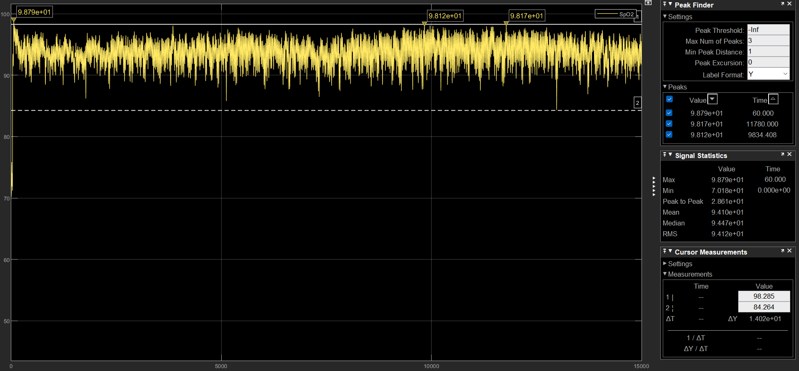
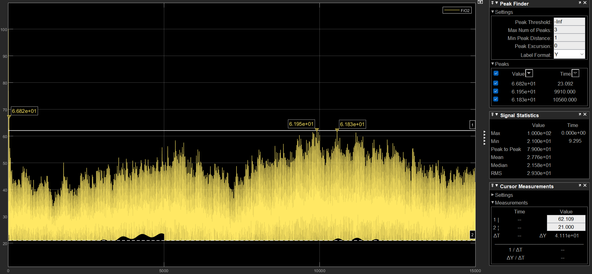
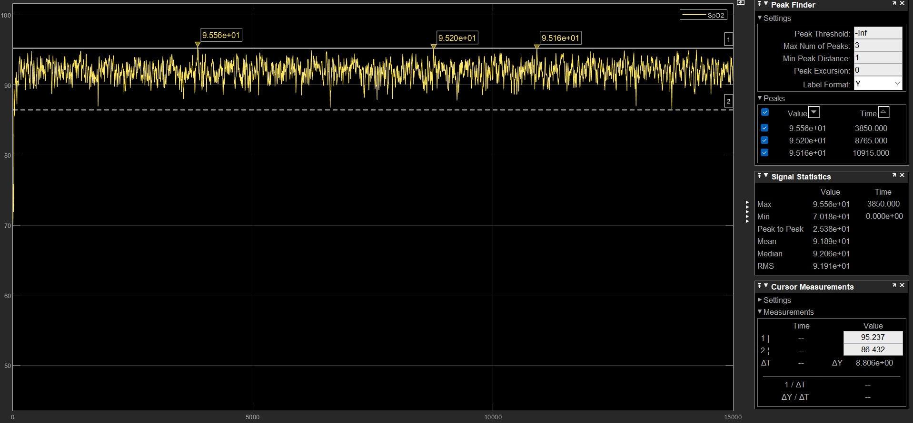
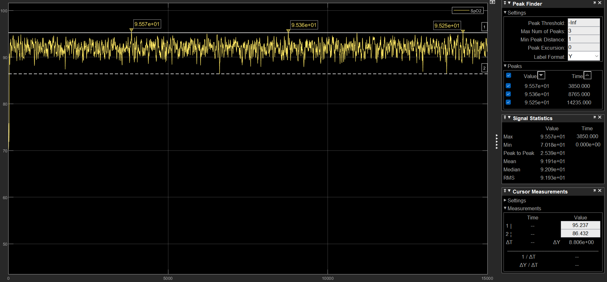
The project showed how model-based delay compensation and feedforward control can transform the response of a dead-time-dominant system. Q-design provided a structured starting point for the PI controller, the Smith Predictor enabled much faster nominal feedback, and feedforward paths rejected measured disturbances before they reached the output. Robustness testing also made the architecture's central limitation clear: Smith Predictor performance depends strongly on the accuracy of the assumed transport delay.